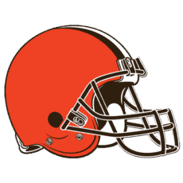

The Future
Play this song
while reading.
Hopes
Jalen Hurts steps out onto the Super Bowl pitch. He's followed by Jason Kelce,
Fletcher Cox, and Brandon Graham, all playing their final seasons not only
for the Eagles, but in the NFL. Lane Johnson follows, part of the group of
veterans, but with a few more years left. This is the mircle team. One last run,
for one last ring. Following them, D'Andre Swift, A. J. Brown, and Devonta Smith
follow them, one of the best recieving cores in the NFL, all looking for
their first, of hopefully many, rings. This is it. This is their moment.
This is the dream, the best scenario possible. It requires a better secondary,
Hurts to not be injured, and a lot of player coming back for one more run. But
it's not impossible. A complete turnaround under new Offensive Cordinator
Kellen Moore and new Defensive Cordinator Vic Fangio could take the team so
close to success two years ago before a Super Bowl loss, and the team that was
10-1, though through a lot of close games, and push them over the final hump.
Reality
The reality is the 1-6 team that ended the season. While there are a lot of good
players, with a few under contract 100% (A. J. Brown, Jalen Hurts, Lane Johnson, etc.),
there is a massive group of pieces that aren't confirmed yet
(Jason Kelce, D'Vonta Swift, Fletcher Cox, etc.). Along with this, even when all
the pieces were there, the secondary was garbage. Even in the successful part of
the year (10-1) there were a lot of close games, especially against teams that
it shouldn't have been close against (Week 1 Patriots).
The reality is the Eagles have it in them to be great. They've shown that they
can succeed, and succeed big. The other side is that they've shown they can throw,
and throw big. The first question is will enough of the key pieces of the Eagles
come back to even give a chance for success, and then, even if they all come back,
can the pieces work together to succeed like they did at their, especially under
a new OC and DC. While there are a lot of questions around the Eagles, this author
has confidence. For that reason...
EAGLES SUPER BOWL LIX CHAMPIONS!!!

Predictions
These are very early predictions for the 2024 schedule. The dates of these
games havn't even been set, which is a big part of predictions. However,
we gotta try our best. So here they are.
- Win vs. Washington Commanders: While the Commanders had two close
games against the Eagles last season, the Eagles should look better, and
the Eagles ended up winning both.
- Win at Washington Commanders: Same logic as above. While the Commanders
should start looking better and have a new head coach, this will still be a
bad season for them.
-
 Loss at Cincinnati Bengals: While the Bengals are harder to predict due
to Joe Burrow being out for a lot of last season, he is back to full health and
should be playing top teir football.
Loss at Cincinnati Bengals: While the Bengals are harder to predict due
to Joe Burrow being out for a lot of last season, he is back to full health and
should be playing top teir football.
- Loss at Baltimore Ravens: While the Ravens did have a disapointing end to the
season, they still were the number one seed. This would be a hard game for anyone,
especially in Baltimore.
- Win at Dallas Cowboys: This is the most contravertial call, but the Cowboys are
changing nothing, as of now, except that they lost a very good OC. They will also
be marred by a sad playoff loss all season. If the Eagles play it correctly, they
could win in Dallas.
- Win at New Orleans Saints: This is a pretty standard pick. The Eagles were 11-6
last season, and that was with an end-of-season meltdown; the Saint were 9-8. The
Eagles should win this one.
- Win at New York Giants: The Giants ae bad. The Eagles have everything they need.
Eagles should sweep the Giants.
- Win vs. Dallas Cowboys: The Eagles did it last year. They can do it again.
If I think the Eagles can beat the Cowboys in Dallas, then they can beat the
Cowboys in Philadelphia.
- Win vs. New York Giants: At home? Against the Giants? This is an easy win.
- Win vs. Atlanta Falcons: The Falcons are going to be better, especially with
a new head coach. However, this is in Philadelphia, and the Falcons were still
negative last year.
- Win vs. Carolina Panthers: I mean this is literally the best game you
could ask for. In Philly? Check. Against the worst team? Check. And that
team doesn't have a first round pick so they can't improve? Check.
-  Win vs. Cleveland Browns: While the Browns did look pretty good last
season, they still don't have the quarterback position figured out. This
combined with home advantage is enough to make the Eagles win.
-
 Win vs. Pittsburgh Steelers: The Steelers are another team facing QB
problmes, except they looked worse than the Browns. This game is also in
Philly, so another win.
Win vs. Pittsburgh Steelers: The Steelers are another team facing QB
problmes, except they looked worse than the Browns. This game is also in
Philly, so another win.
- Win at Tampa Bay Buccaneers: This is a close game. The Bucs looked better
near the end of the season, especially with a Divisonal Round appearance.
However, the Eagles beat them last year pretty handily, so they can do it again.
- Loss at Los Angeles Rams: This is the hardest one to choose, but the Rams are going
to be a monster team next season. They've been great at drafting, they have young
recievers, and Mat Stafford is a great. In LA, it's gonna be a hard game for the Eagles.
- Win vs. Green Bay Packers: This is another hard one to choose, but the Packers
only really started to look good near the end. To say that's how their going to be all
of 2024 is ridiculous. Plus, their defense was awful and it's in Philly.
- Win vs. Jacksonville Jaguars: This is another hard one that could be close. But,
while I do think Trevor Lawrence will be good in 2024, he had a pretty bad run last
season. And in Philly I just don't think Jacksonville can do it.